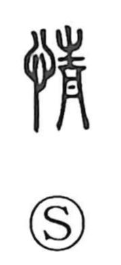

情

Kun: nasake | On: jo, sei
emotion ・ feeling ・ sympathy
Explanation
情 combines 心, written 忄, with 青 as its sound element. 心 places the meaning in the heart and mind. 情 names feeling: what the heart experiences and the impulses with which it responds.
These responses are part of a person’s inborn life. Joy, anger, sorrow, fear, love, dislike, and desire were described as feelings that do not have to be learned. From feeling in general, 情 extends to affection, sympathy, and considerate concern for another person. It can also mean sincerity or someone’s true feelings, then the actual circumstances of a matter—how things stand beneath their outward presentation.